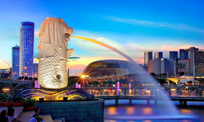
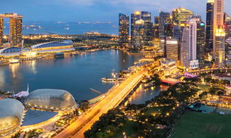
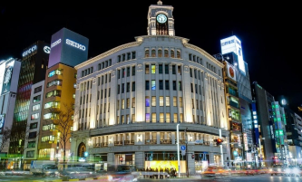
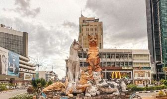
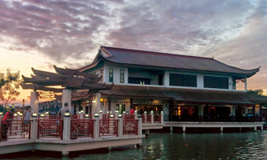

My Travels
| I've had the wonderful opportunity to explore diverse cultures and beautiful landscapes during my travels to Singapore, Japan(Tokyo), and Malaysia(Kuching). In Singapore, I saw an example of a succesful ASEAN country. It was really interesting as the main transportation of Singapore was MRT. Japan offered me a glimpse into its unique blend of ancient traditions and cutting-edge technology. I also fell in love with the town and how the city is constructed. Kuching is quite similar to Pontianak, but their culture is different as most of the population speaks Mandarin. | |
|  |  |
|  | |
|  |  |